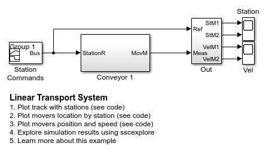
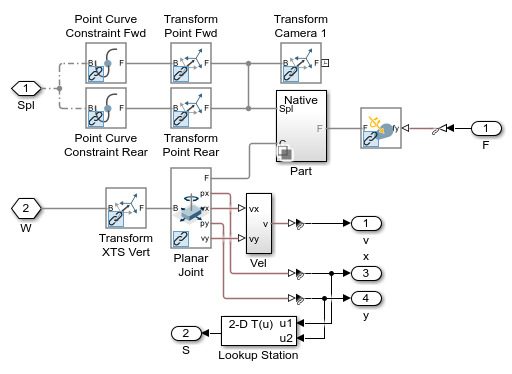
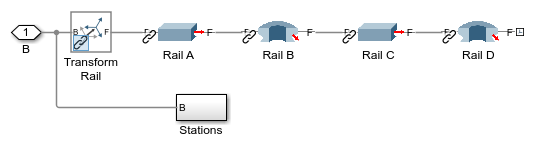
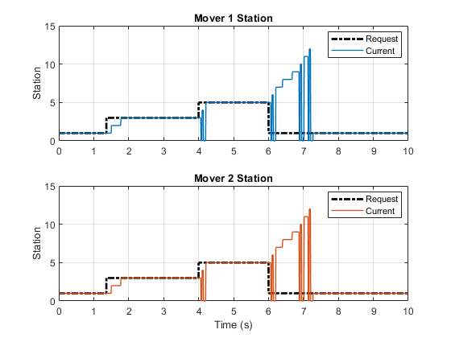
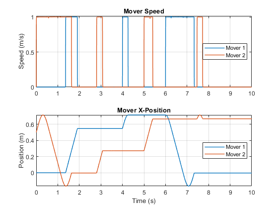

Linear Transport System
This example shows a linear transport system often used in manufacturing lines. Linear motors drive movers along a track to specified positions. Point-on-Curve Constraints are used to constrain the movement of the mover to the track. The geometry, spline of the track, and specified stopping positions are parameterized using MATLAB, making it easy to reconfigure the system.
Contents
Model

Conveyor 1 Subsystem
The system is composed of one rail and two movers. A mechanical reference and a spline defining the path of the rail connect the components in the system.
Mover 1 Subsystem
Each mover is controlled independently. The control system tells the mover to which station it should go. Its x and y position are converted to the nearest station number so that the motion control subsystem can tell the mover when to move and stop.
Mover Subsystem
The mover must be constrained to the spline defining the rail such that it follows the rail with a specific orientation. Two Point on Curve constraints ensure that its axis is aligned with the rail, and the Planar Joint ensures that it does not rotate about the rail.
Rail Subsystem
The rail is defined by a series of straight and curved extrusions. Their lengths and arcs are parameterized so that the track can be modified using MATLAB variables.
Simulation Results from Simscape Logging
The plot shows the track of the transport system and the stations along the track.
The plots below show the requested and current station along the track for each mover.
The plots below show speed and position along the global x-axis for each mover.